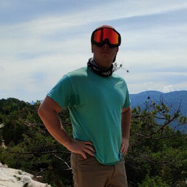
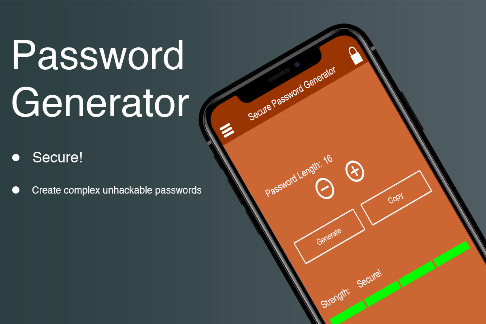
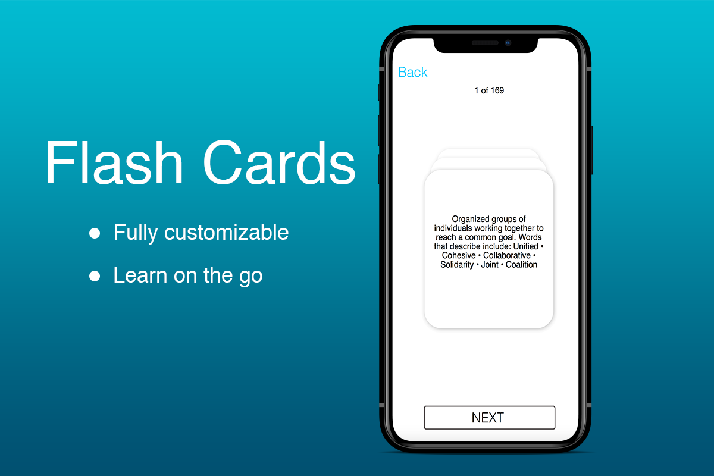
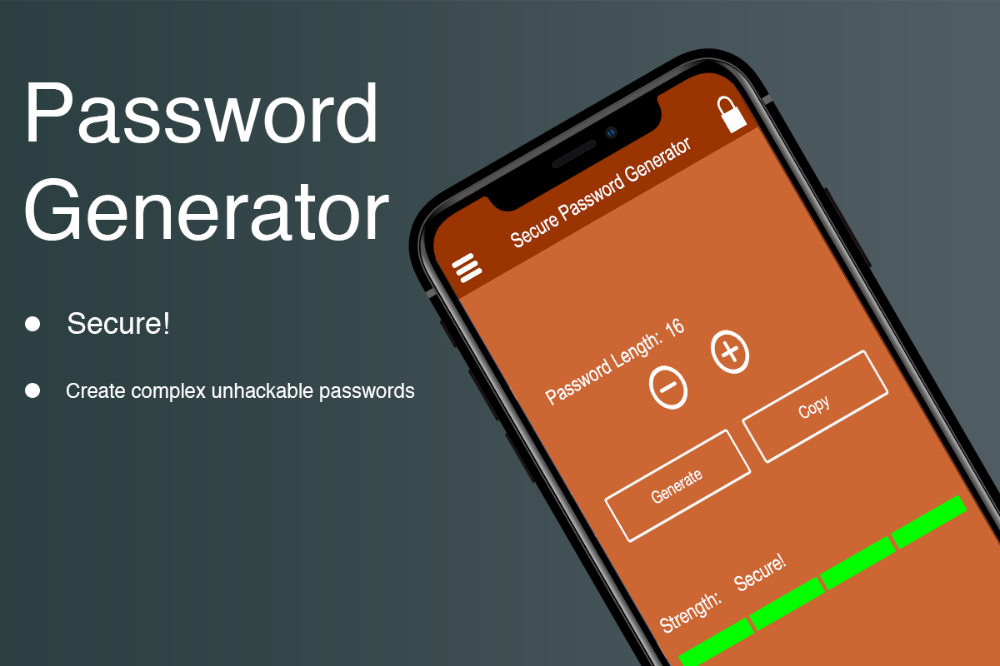
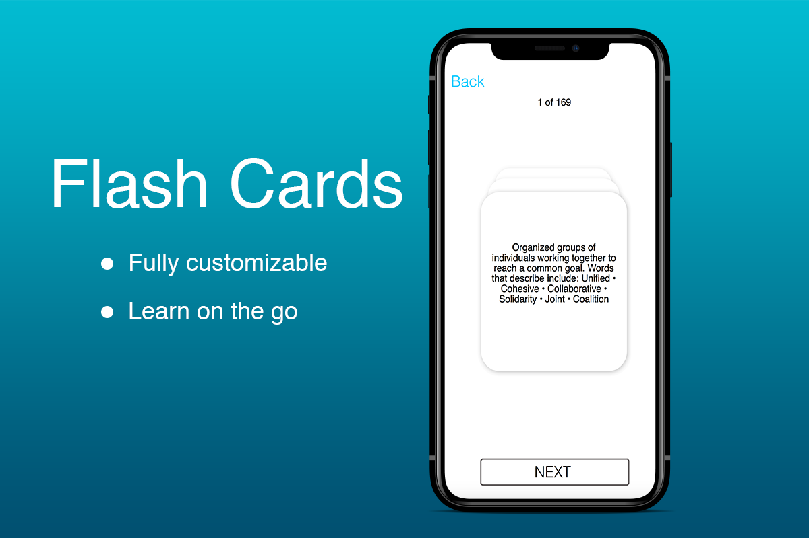

Hello, I am Scott Owen
Class Projects

About Me
- UI Design
- App Development
- Web Development
- Photography
- Offroad Powersports
I'm a structural maintainer by trade and for the last year and a half i've been a (QA) Quality Assurance inspector. What drew me to pursuing a computer programming degree other than rank progression..is i've always been fascinated with being able to make something with a computer wether it be a website or an appliation I love it. Although being sort of computer savy has its downfalls, for instance when a friend or coworker assumes you can fix whatever issue they are having. I would like to have my computer hobby potentially turn from a hobby into a part time job/full time job and i'm looking forward to this class.
When i'm not at work I can be found messing around on my computer when an idea strikes. I also really enjoy offroad powersports such as UTV's. As seen below is a picture from a recent trip i took to Windrock Park in Tennessee. I also enjoy anything outdoors kayaking, camping, photography, shooting. I do enjoy playing video games such as Rocket League, Call of Duty and the like. Below are also some screen shots of some applications i've developed but never published..maybe one day.
 


